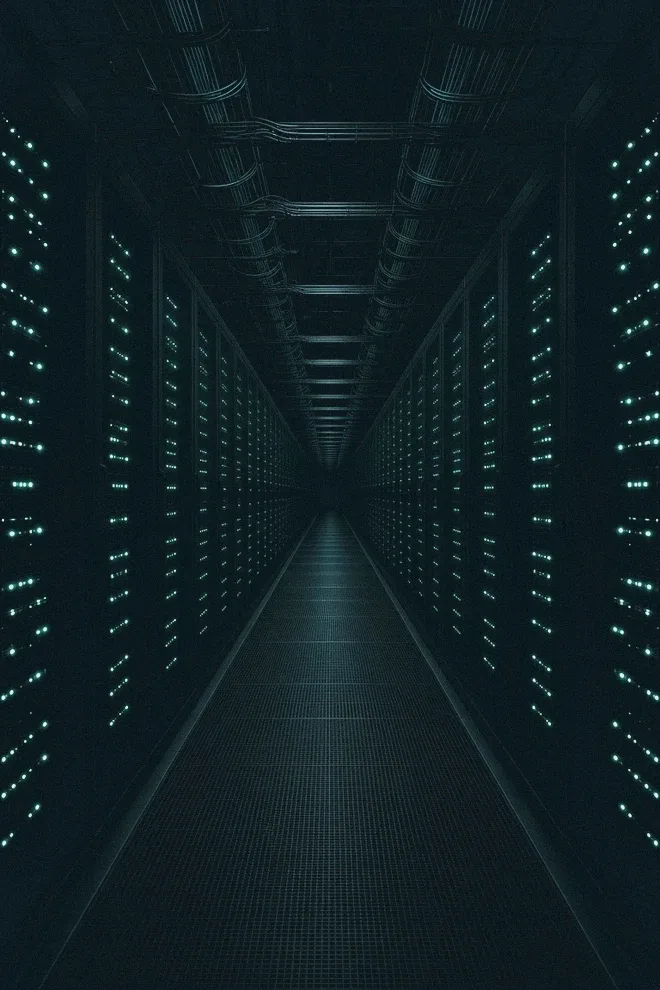

Kapløbet
Det hurtigste led venter på det langsomste
Serverne og bygningen kan være klar, længe før strømmen er det. Søjlerne viser, hvor lang tid hvert led typisk tager ifølge IEA, målt i år.
Ventetiden på transformere og kabler er næsten fordoblet siden 2021. Derfor fortæller energitemaet om mere end strøm. Det handler om alle de led, der skal være på plads, før strømmen når frem.
Kilde: IEA, Energy and AI (2025) og Building the Future Transmission Grid (2025). Tallene gælder for avancerede økonomier og er typiske tider, ikke faste regler.
Hvorfor energi?
Hvorfor ligger der kraftværker i en teknologifond?
Fordi en AI-model ikke regner uden strøm. Datacentre brugte omkring 415 TWh i 2024, cirka 1,5 % af verdens elforbrug, og forbruget er vokset med omkring 12 % om året siden 2017, skriver Det Internationale Energiagentur (IEA).
NewDeal Invest følger teknologien hele vejen ned gennem kæden. Chippen er kun én del af den. Strømmen skal også findes, laves, sælges, flyttes og gemmes, og det er de selskaber, temaet Energi samler.
Fondens 12 temaer, andel af PMINDI pr. 16.10.2026
- Chips og halvledere24,31 %
- Energi og elnet16,96 %
- Datacentre, netværk og cloud12,59 %
- Digitale platforme10,56 %
- Robotik og AI i den fysiske verden7,23 %
- Råstoffer og materialer6,69 %
- Space5,99 %
- Fintech og betalinger5,22 %
- Krypto4,07 %
- AI- og forretningssoftware2,35 %
- Sundhed og biotek1,77 %
- Kvante1,57 %
Hvert selskab tæller i ét tema, dets primære placering i NewDeal Invests inddeling. Kontanter og andre poster er ikke med, derfor summerer temaerne til 99,3 %.

Mandag 28. april 2025 · Spanien og Portugal
Den dag balancen gik tabt
Kl. 12.33 gik strømmen i hele det spanske og portugisiske fastland. Det europæiske samarbejde af systemoperatører, ENTSO-E, kalder det den alvorligste strømafbrydelse i Europa i over 20 år og den første af sin art.
Ekspertpanelets endelige rapport fra 20. marts 2026 peger ikke på ét nedbrud. Den peger på mange ting på én gang: svingninger i nettet, huller i styringen af spændingen og produktion, der hurtigt skruede ned eller koblede fra. Spændingen steg, og anlæg koblede fra, det ene efter det andet.
Det er netop den slags opgaver, to af leddene nedenfor handler om: elnettet, der skal holde spændingen, og bufferen, der skal kunne træde til på sekunder.
Kilde: ENTSO-E, 28 April 2025 Blackout ↗ og ekspertpanelets endelige rapport, 20.03.2026.
- Spanien og Portugal er helt uden strøm. Et lille område i Sydvestfrankrig mærker kortvarige forstyrrelser.
- Portugal er genoprettet.
- Det spanske transmissionsnet er fuldt genoprettet.
- Et ekspertpanel på 49 medlemmer udgiver sin endelige rapport med årsager og anbefalinger.
Rejsen
Én kilowatt-time, syv led
For hvert led kan du se, hvad der sker, hvor det typisk går i stå, og hvilke selskaber fonden ejer netop dér. Vægtene er andele af hele fonden PMINDI pr. 16. oktober 2026.
Led 1 af 7 · Gas, uran og sol
Kilden
Det sker her
Al strøm begynder med noget, der skal hentes, flyttes eller forarbejdes. Gas pumpes op og sendes gennem rørledninger. Uran skal beriges, før det kan bruges i en reaktor.
Flaskehalsen
Råvaren er der som regel. Det er udvinding, transport og forarbejdning, der tager tid og kræver udstyr.
Derfor betyder det noget
Fonden ejer selskaber i alle tre dele af kilden: producenter af naturgas, et selskab med gasrørledninger og selskaber, der beriger uran og isotoper.
Det ejer fonden her
Hver bjælke viser selskabets andel af hele fonden. En fuld bjælke er 1,1 %.
3,11 %af fonden pr. 16.10.2026
 Expand Energy
Expand EnergyStor amerikansk naturgasproducent.
0,66 % af fonden Kilde ↗
- Comstock Resources
Naturgasproducent (Haynesville).
0,52 % af fonden Kilde ↗
 ProPetro
ProPetroServiceydelser til olie- og gasboring.
0,32 % af fonden Kilde ↗
 Antero Resources
Antero ResourcesNaturgasproducent.
0,29 % af fonden Kilde ↗
Vis alle 12 selskaber
 ASP Isotopes
ASP IsotopesIsotopberigelse til kernekraft og medicin.
0,22 % af fonden Kilde ↗
 Kinder Morgan
Kinder MorganGasrørledninger.
0,22 % af fonden
 Vista Energy Sab De Cv
Vista Energy Sab De CvOlie og gas i Argentina.
0,20 % af fonden
 Centrus Energy
Centrus EnergyUranberigelse og HALEU.
0,18 % af fonden Kilde ↗
 EQT
EQTNaturgasproducent.
0,17 % af fonden Kilde ↗
- Atlas Energy Solutions
Frac-sand og strøm.
0,15 % af fonden
 Range Resources
Range ResourcesNaturgasproducent.
0,11 % af fonden
 Canadian Solar
Canadian SolarSolcellemoduler og batterilagring.
0,07 % af fonden Kilde ↗
Led 2 af 7 · Turbiner, reaktorer og solceller
Kraftværket
Det sker her
Her bliver brændsel og sollys til strøm. Fonden har tre slags producenter med: gas og brændselsceller, kernekraft og sol.
Flaskehalsen
Leveringstiden på turbiner til nye gaskraftværker er nu flere år, skriver Det Internationale Energiagentur (IEA).
Derfor betyder det noget
Et typisk AI-datacenter bruger lige så meget strøm som 100.000 husstande. De største, der bygges nu, bruger 20 gange så meget (IEA). Det kræver nye kraftværker, ikke bare flere stikkontakter.
Det ejer fonden her
Hver bjælke viser selskabets andel af hele fonden. En fuld bjælke er 1,1 %.
Gas, motorer og brændselsceller
3,12 %af fonden pr. 16.10.2026
 Babcock & Wilcox
Babcock & WilcoxKedler og kraftværksteknologi, også til strøm til datacentre.
0,87 % af fonden Kilde ↗
 Power Solutions International
Power Solutions InternationalMotorer og strømsystemer, bl.a. til datacentre.
0,43 % af fonden
 Ballard Power Systems
Ballard Power SystemsBrændselsceller med brint.
0,33 % af fonden Kilde ↗
Vis alle 13 selskaber
 Erock Inc
Erock IncGasbaseret lokal strøm til datacentre.
0,27 % af fonden
 Rolls-Royce
Rolls-RoyceFlymotorer, strømsystemer og SMR.
0,25 % af fonden Kilde ↗
 Bloom Energy
Bloom EnergyBrændselsceller til datacentre.
0,21 % af fonden Kilde ↗
 GE Vernova
GE VernovaGasturbiner, vind og elnet.
0,19 % af fonden Kilde ↗
- Fluor Corp
Ingeniør og byggeri, ejer i NuScale.
0,11 % af fonden
- Plug Power
Brint og elektrolyse.
0,11 % af fonden Kilde ↗
- Flowserve
Pumper, ventiler.
0,10 % af fonden
 Solaris Energy Infrastructure
Solaris Energy InfrastructureMobil strøm til datacentre.
0,10 % af fonden Kilde ↗
 Caterpillar
CaterpillarMaskiner og gasgeneratorer.
0,08 % af fonden
 Cummins
CumminsMotorer og generatorer.
0,07 % af fonden Kilde ↗
Kernekraft og små reaktorer
0,91 %af fonden pr. 16.10.2026


Sol
3,42 %af fonden pr. 16.10.2026
 T1 Energy
T1 EnergyProduktion af solcellemoduler i USA.
0,77 % af fonden Kilde ↗
 SolarEdge
SolarEdgeInvertere og strømoptimering til solceller.
0,56 % af fonden Kilde ↗
 Enphase Energy
Enphase EnergyMikroinvertere og batterier til solceller.
0,40 % af fonden Kilde ↗
Vis alle 9 selskaber
- First Solar
Tyndfilms-solcellemoduler.
0,39 % af fonden Kilde ↗
 Sunrun
SunrunSolceller og batterier til boliger.
0,36 % af fonden Kilde ↗
 Tigo Energy
Tigo EnergySikkerhed og optimering til solceller.
0,34 % af fonden Kilde ↗
 Nextracker
NextrackerSolcelle-trackere.
0,23 % af fonden Kilde ↗
 Canadian Solar
Canadian SolarSolcellemoduler og batterilagring.
0,20 % af fonden Kilde ↗
 Array Technologies
Array TechnologiesSolcelle-trackere.
0,17 % af fonden Kilde ↗
Led 3 af 7 · Den, der sælger strømmen
Elselskabet
Det sker her
Elselskaberne ejer kraftværker og sælger strømmen videre. En stor kunde, fx et datacenter, kan indgå en lang aftale direkte med et elselskab.
Flaskehalsen
Et datacenter kan ikke vente på et nyt kraftværk. Derfor er eksisterende værker, der allerede leverer strøm, eftertragtede.
Derfor betyder det noget
Et eksempel fra fonden: Vistra og Meta har offentliggjort aftaler, der skal støtte kernekraftværker i elnetområdet PJM i det østlige USA og tilføre ny kernekraft til nettet (Vistra, 9. januar 2026).
Det ejer fonden her
Hver bjælke viser selskabets andel af hele fonden. En fuld bjælke er 1,1 %.
1,80 %af fonden pr. 16.10.2026
 Vistra
VistraElproducent med gas- og kernekraft.
0,31 % af fonden Kilde ↗
- NextEra Energy
Elforsyning og sol/vind.
0,24 % af fonden Kilde ↗
 Talen Energy
Talen EnergyKernekraft og strøm til datacentre.
0,24 % af fonden Kilde ↗
 DTE Energy
DTE EnergyForsyningsselskab.
0,20 % af fonden
Vis alle 9 selskaber
- CMS Energy
Forsyningsselskab.
0,19 % af fonden
- Am Electric
Forsyning og transmission.
0,18 % af fonden
 FirstEnergy
FirstEnergyForsyning og transmission.
0,18 % af fonden
 Southern
SouthernForsyningsselskab.
0,16 % af fonden Kilde ↗
 Clearway Energy
Clearway EnergyVedvarende elproduktion.
0,10 % af fonden
Led 4 af 7 · Ledninger, transformere og montører
Elnettet
Det sker her
Strømmen skal fra kraftværket ud til forbrugeren. Det kræver højspændingsledninger, kabler, transformere og folk, der bygger det.
Flaskehalsen
Store transformere kan tage op til fire år at få leveret, og kabler to til tre år. Ventetiden er næsten fordoblet siden 2021. En ny højspændingsledning tager fire til otte år at bygge (IEA).
Derfor betyder det noget
Elnettet er det led, der er sværest at gøre hurtigere. IEA anslår, at omkring hvert femte planlagte datacenter kan blive forsinket, fordi elnettet ikke kan følge med.
Det ejer fonden her
Hver bjælke viser selskabets andel af hele fonden. En fuld bjælke er 1,1 %.
1,32 %af fonden pr. 16.10.2026


Led 5 af 7 · Batterier og reservestrøm
Bufferen
Det sker her
Et datacenter må ikke gå ned. Derfor står der batterier og generatorer klar, og batterier ude i nettet gemmer strøm fra sol og vind til senere.
Flaskehalsen
Reservestrømmen står det meste af tiden stille. IEA peger på, at den kan bruges mere fleksibelt og aflaste elnettet, når det er presset.
Derfor betyder det noget
Bufferen er en sikring, men også et værktøj: IEA nævner fleksibel brug af reservestrøm og lagring som en af måderne at mindske risikoen for, at nye datacentre bliver forsinket.
Det ejer fonden her
Hver bjælke viser selskabets andel af hele fonden. En fuld bjælke er 1,1 %.
3,28 %af fonden pr. 16.10.2026
 Enovix
EnovixSilicium-anode lithium-ion-batterier.
0,63 % af fonden Kilde ↗
 Fluence Energy
Fluence EnergyBatterilagring til elnettet.
0,53 % af fonden Kilde ↗
 Generac
GeneracGeneratorer og reservestrøm, også til datacentre.
0,51 % af fonden Kilde ↗
 SES AI
SES AILithium-metal-batterier og AI til materialeforskning.
0,44 % af fonden Kilde ↗
Vis alle 11 selskaber
 QuantumScape
QuantumScapeSolid-state-batterier til elbiler.
0,42 % af fonden Kilde ↗
 Solid Power
Solid PowerSolid-state-elektrolytter til batterier.
0,24 % af fonden Kilde ↗
 Amprius Technologies
Amprius TechnologiesBatterier til droner og luftfart.
0,17 % af fonden Kilde ↗
 Eos Energy
Eos EnergyZinkbatterier til nettet.
0,14 % af fonden Kilde ↗
 Electrovaya
ElectrovayaBatterier til industri.
0,09 % af fonden Kilde ↗
- Microvast
Batterier.
0,09 % af fonden Kilde ↗
 NeoVolta
NeoVoltaBoligbatterier.
0,02 % af fonden Kilde ↗
Led 6 af 7 · Byggeri og køling
Datacentret

Det sker her
Nu når strømmen frem. Bygningen skal opføres, og varmen fra serverne skal fjernes igen.
Flaskehalsen
Et datacenter kan stå færdigt på to til tre år, men næsten halvdelen af den amerikanske kapacitet ligger samlet i fem områder. Det presser de lokale elnet (IEA).
Derfor betyder det noget
Det er her, energitemaet møder datacentertemaet. Selskaberne nedenfor hører til temaet Datacentre i fonden.
Det ejer fonden her
Hver bjælke viser selskabets andel af hele fonden. En fuld bjælke er 1,1 %.
0,87 %af fonden pr. 16.10.2026
Fra temaet Datacentre. Tæller ikke med i de 17,0 %.
 Fermi Inc
Fermi IncEnergi- og datacentercampus i Texas.
0,30 % af fonden
 Jacobs Solutions
Jacobs SolutionsIngeniørdesign af infrastruktur og datacentre.
0,27 % af fonden
 Sterling Infrastructure
Sterling InfrastructureAnlægsarbejde for datacentre.
0,23 % af fonden
 Comfort Systems USA
Comfort Systems USAVVS og køling.
0,07 % af fonden
Led 7 af 7 · Strømchips
Den sidste meter

Det sker her
Strøm fra nettet har alt for høj spænding til en chip. På vejen ind i serveren bliver den omformet flere gange af små strømchips og komponenter.
Flaskehalsen
Hver omformning koster lidt energi i form af varme. Bedre strømchips betyder mindre spild og mindre varme at køle væk.
Derfor betyder det noget
Rejsen slutter her, ved chippen. Selskaberne nedenfor hører til temaet Chips og halvledere i fonden.
Det ejer fonden her
Hver bjælke viser selskabets andel af hele fonden. En fuld bjælke er 1,1 %.
3,27 %af fonden pr. 16.10.2026
Fra temaet Chips og halvledere. Tæller ikke med i de 17,0 %.
- Taiyo Yuden
Passive komponenter (keramiske kondensatorer) til elektronik og servere.
1,05 % af fonden Kilde ↗
 Navitas Semiconductor
Navitas SemiconductorGaN- og SiC-effektchips, bl.a. til AI-strøm.
0,51 % af fonden
 ON Semiconductor
ON SemiconductorSiC- og effektchips samt sensorer til biler.
0,35 % af fonden
 STMicroelectronics
STMicroelectronicsAnalog-, effekt- og mikrocontrollerchips.
0,31 % af fonden Kilde ↗
Vis alle 12 selskaber
 Renesas Electronics
Renesas ElectronicsMikrocontrollere og effektchips.
0,23 % af fonden
 Ambiq Micro
Ambiq MicroStrømbesparende chips til enheder.
0,22 % af fonden
 Infineon Technolo N
Infineon Technolo NEffektchips og mikrocontrollere.
0,14 % af fonden
 Monolithic Power
Monolithic PowerStrøm til AI-chips.
0,12 % af fonden
 Alpha and Omega Semiconductor
Alpha and Omega SemiconductorEffektchips.
0,10 % af fonden
- Texas Instrument
Analog- og effektchips.
0,09 % af fonden
 Analog Devices
Analog DevicesAnaloge chips.
0,08 % af fonden
 Microchip Technology
Microchip TechnologyMikrocontrollere.
0,07 % af fonden
Nyt fra kæden
Strømmen i nyhederne
Fem daterede nyheder fra 2026 om de led, siden handler om. Vi gengiver, hvad kilden skriver. Vægtene er fondens pr. 16.10.2026 og siger intet om kursen.
- Led 5 · Bufferen
Generatorer kan tage to år at få leveret
På branchekonferencen Capacity Europe i London 14. oktober fortalte indkøbs- og ingeniørfolk fra datacenterbranchen, at bygherrer nu bestiller generatorer to år frem, før designet er færdigt. Også højspændingstransformere og koblingsudstyr blev nævnt som knappe.
I fonden: bl.a. Generac, 0,51 %, laver generatorer og reservestrøm.
Kilde: Capacity, 15.10.2026 ↗ - Led 3 · Elselskabet
NextEra og Dominion vil lægge sig sammen
De to amerikanske elselskaber har indgået en aftale om at fusionere. Handlen er ikke gennemført og kræver godkendelser. Ifølge meddelelsen vil det samlede selskab have omkring 10 mio. kundekonti og 110 GW produktion.
I fonden: NextEra Energy, 0,24 %.
Kilde: NextEra Energy, 18.05.2026 ↗ - Led 4 · Elnettet
Rapporten om blackoutet i Spanien og Portugal
ENTSO-E's ekspertpanel offentliggør sin endelige rapport om 28. april 2025. Den beskriver, hvad der skete, hvorfor, og hvad panelet anbefaler.
Læs historien ovenfor.
Kilde: ENTSO-E, 20.03.2026 ↗ - Led 2 · Kraftværket
1,2 GW gaskraft til AI-campusser
Babcock & Wilcox har fået fuld besked om at gå i gang med en aftale på 2,4 mia. dollar: fire gasfyrede kedler på hver 300 MW for Base Electron, som skal levere strømmen til Applied Digitals AI-campusser. B&W designer og bygger. Det er ikke B&W, der skal eje værket.
I fonden: Babcock & Wilcox, 0,87 %.
Kilde: Babcock & Wilcox, 04.03.2026 ↗ - Led 3 · Elselskabet
Kernekraft på 20-årige aftaler
Vistra har indgået 20-årige aftaler om at levere mere end 2.600 MW fra tre kernekraftværker i Ohio og Pennsylvania til Meta. Strømmen fra værkerne går fortsat ud på nettet til alle.
I fonden: Vistra, 0,31 %.
Kilde: Vistra, 09.01.2026 ↗
Hele billedet
Sådan fordeler de 17,0 % sig
Led 1 til 5 udgør temaet Energi. Ingen enkelt del dominerer: brændsel, kraftværker, sol og batterier vejer omtrent lige meget.
- Brændsel3,11 %
- Gas og brændselsceller3,12 %
- Kernekraft0,91 %
- Sol3,42 %
- Elselskaber1,80 %
- Elnet1,32 %
- Batterier og reserve3,28 %
Det viser siden
Hvor fondens energiselskaber sidder i kæden, og hvor meget de vejer. Placeringen bygger på fondens egen inddeling af selskaberne.
Det viser siden ikke
Om selskaberne bliver vindere. Der er ingen prognoser her, og en flaskehals i dag siger intet sikkert om afkastet i morgen.
Risiko
Fonden har risikoklasse 5 på en skala fra 1 til 7 i det centrale informationsdokument. Værdien kan svinge meget og kan falde.
Kilder
Hvor tallene kommer fra
- IEA: Energy and AI, Executive summary (2025) ↗: 415 TWh og 1,5 % i 2024, cirka 12 % om året siden 2017, 100.000 husstande, turbiner, ledninger på fire til otte år og risiko for forsinkelse af hvert femte datacenter.
- IEA: Energy demand from AI (2025) ↗: et datacenter kan bygges på to til tre år.
- IEA: Building the Future Transmission Grid (2025) ↗: leveringstid for kabler og transformere.
- ENTSO-E: 28 April 2025 Blackout ↗ og nyhed om den endelige rapport, 20.03.2026 ↗
- Capacity, 15.10.2026 ↗, NextEra Energy, 18.05.2026 ↗, Babcock & Wilcox, 04.03.2026 ↗ og Vistra, 09.01.2026 ↗
- Selskaber, vægte, temaer og logoer: NewDeal Invests positionsdata og temaklassifikation pr. 16. oktober 2026. Hvert selskabs kilde-link fører til selskabets egen side.
- Central informationsdokument (KID) for PMINDI ↗